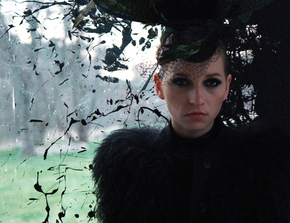

Top Girl oder la déformation professionnelle
Tatjana
Turanskyj
D 2014
94 min – HD – Deutsch
B: Tatjana
Turanskyj – Mit Julia Hummer, Susanne Bredehöft, Jojo Pohl, RP
Kahl, Nina Kronjäger
K: Lotta Kilian – S: Stephanie Kloss, Ricarda Zinke – M: Niels
Lorenz
SD: Jochen Jezussek, Christian Obermaier – T: Matthias Gauerke
P: Tatjana Turanskyj, Jan Ahlrichs
V: Drop-Out Cinema
turanskyj-ahlrichs.com
Momentaufnahmen einer zeitgenössischen,
brüchigen weiblichen Arbeits-Biografie,
Teil 2
Helena ist alleinerziehende Mutter einer elfjährigen Tochter,
mäßig erfolgreiche Schauspielerin und verdient ihren
Lebensunterhalt mit Sexarbeit in einem Escort-Service.
„Das Bordell ist eine Bühne, und ebenso ist es dieser Film, in
den Tatjana Turanskyj kleine und große Performances
eingeflochten hat und ihre Darsteller regelrecht deklamieren
lässt, was den Erzählfluss bricht und ,Top Girl‘ etwas angenehm
Essayistisches verleiht.” – Manon
Cavagna, critic.de
montag 10 okt 22.30 uhr werkstattkino – zu gast: Tatjana Turanskyj
Tatjana Turanskyj Studium der Literatur- und Theaterwissenschaft und Soziologie. Gründungs-mitglied des Filmkollektivs Hangover Ltd*, Mitinhaberin der Firma turanskyj & ahlrichs für den Autor*innenfilm und Mitbegründerin der Initiative ProQuote Regie. Derzeit Arbeit am 3. Teil der Frauen-und-Arbeit-Trilogie.
Filme Remake 2004 – Sehnsucht nach Schüssen 2006 – Korleput 2007 – Eine flexible Frau 2010 – Top Girl 2014 – Orientierungslosigkeit ist kein Verbrechen 2016 (11. UX)